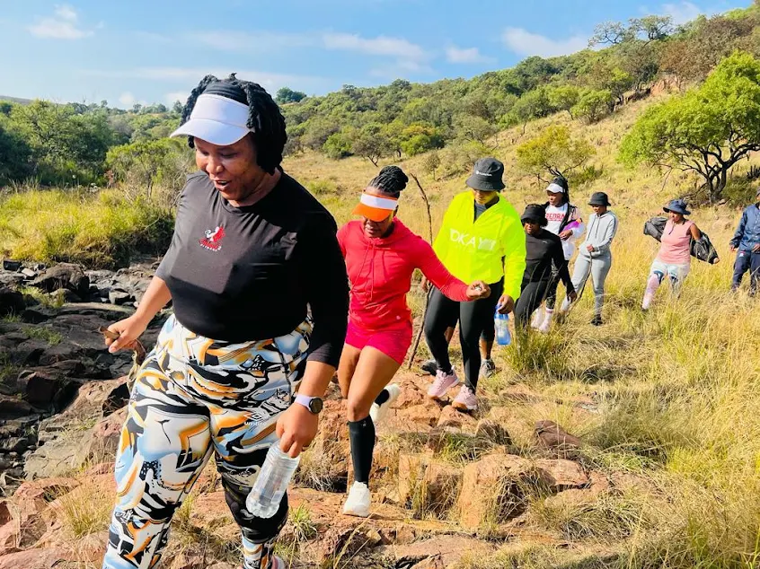
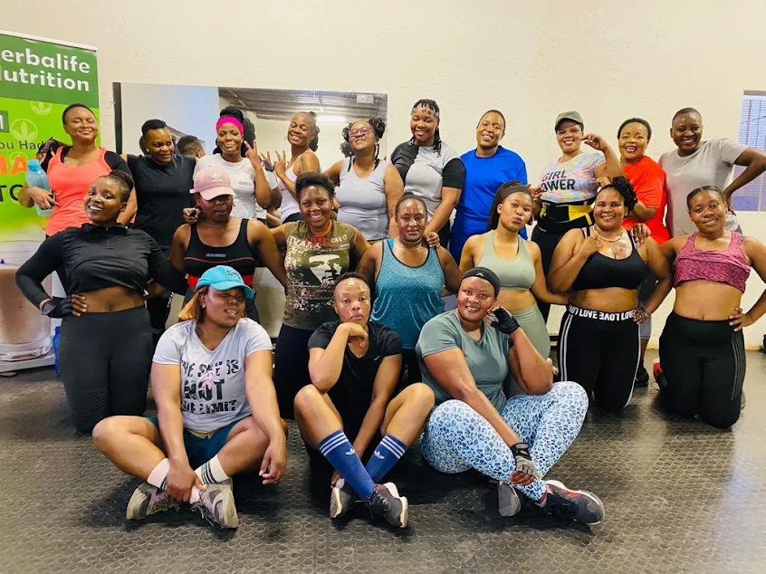
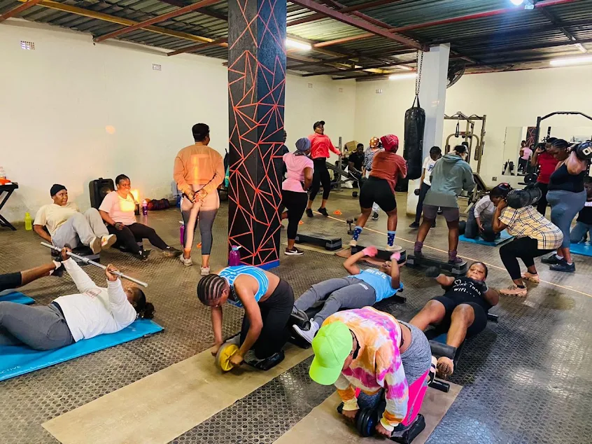
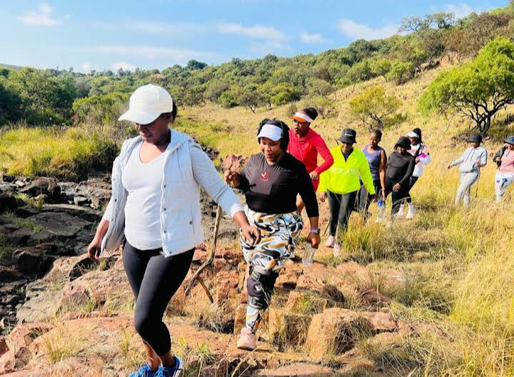
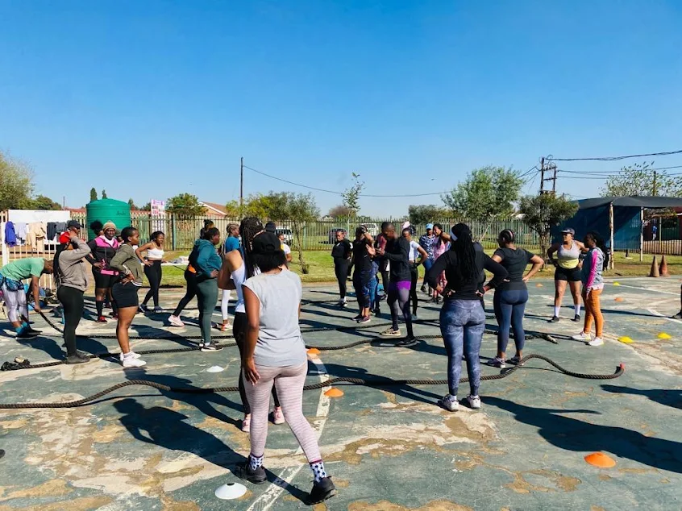
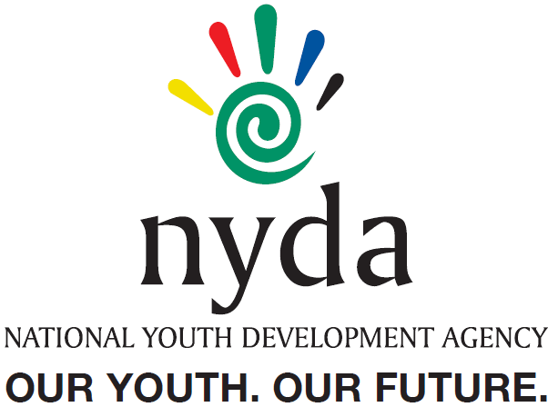

Channel 2 Fitness Gym is a community‑focused fitness hub that offers dynamic, group‑oriented workouts and boot camps. It provides lifestyle services including group training, aerobics, functional training, personal training, boot camps, sports conditioning and weightlifting at a lower cost.
Owned by Themba Mahlalela (27), who is not driven by profit but is devoted to seeing his fellow residents lead a healthy lifestyle. He regularly hosts boot camps and short‑distance marathons for locals free of charge. This helps to promote fitness and motivates members of his community to exercise regularly. He is using his passion for fitness to uplift the community. “I started building the gym in 2018 and opened its doors in 2022. I decided to build on the stand that my parents own,” explained Mahlalela, who is also a certified personal trainer.

Because he has already built a reputation in and around Emalahleni, Mahlalela often gets invited to teach groups about health and wellness. He also organises team‑building events and boot camps for schoolchildren free of charge.

Channel2Fitness Gym, a beacon of health and community empowerment, aspires to make a substantial impact on the lives of individuals in eMalahleni, South Africa. Our unique approach to fitness not only enhances physical well-being but also addresses critical societal issues such as substance abuse and mental health.

Mahlalela is not driven by profit but is devoted to seeing his fellow residents lead a healthy lifestyle. He regularly hosts boot camps and short‑distance marathons for locals free of charge. This helps to promote fitness and motivates members of his community to exercise regularly.

Through

In 2022, the gym received a R60 000 grant from the National Youth Development Agency (NYDA), which helped Mahlalela buy equipment. This helped him attract more clients, which ultimately led to the creation of four permanent jobs for residents.